2021.01 ~ 2021.03
근로자간편등록 웹 퍼블리싱
개발인원 : 백엔드1명, 디자인&퍼블리싱1명
적용기술 : HTML5, CSS3, J-query
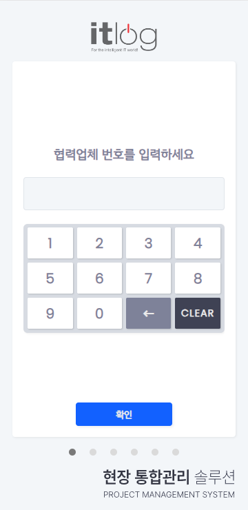
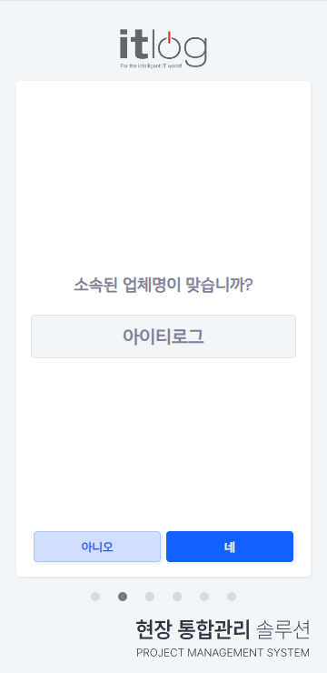
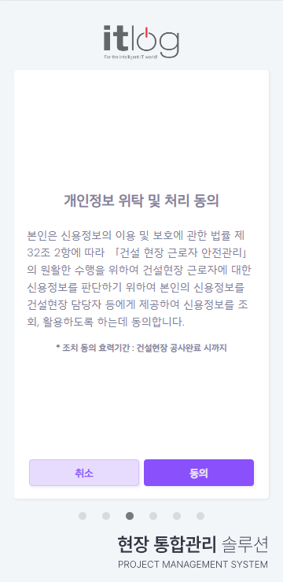
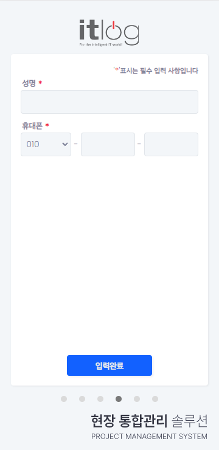
PMS 사이트에서 제공하는 QR코드를 이용하여 현장근로자(일용직)를 간편하게 등록할 수 있는 웹 사이트 입니다.
어도비XD를 사용하여 디자인 시안을 제작하였으며, 디자인 채택 후 HTML과 CSS로 퍼블리싱을 담당했습니다. (회사에서 사용 하던)J-query를 사용하여 기본적인 동작을 구현했습니다.
2021.04 ~ 2021.08
PMS 디자인 리뉴얼 & 코드 리펙토링
개발인원 : 디자인&퍼블리싱1명
적용기술 : HTML5, CSS3, J-query, javascript
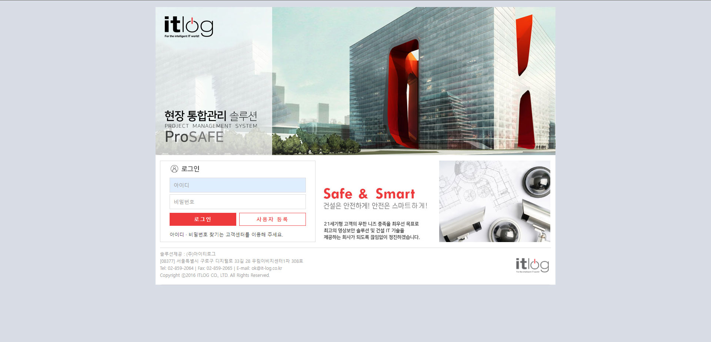
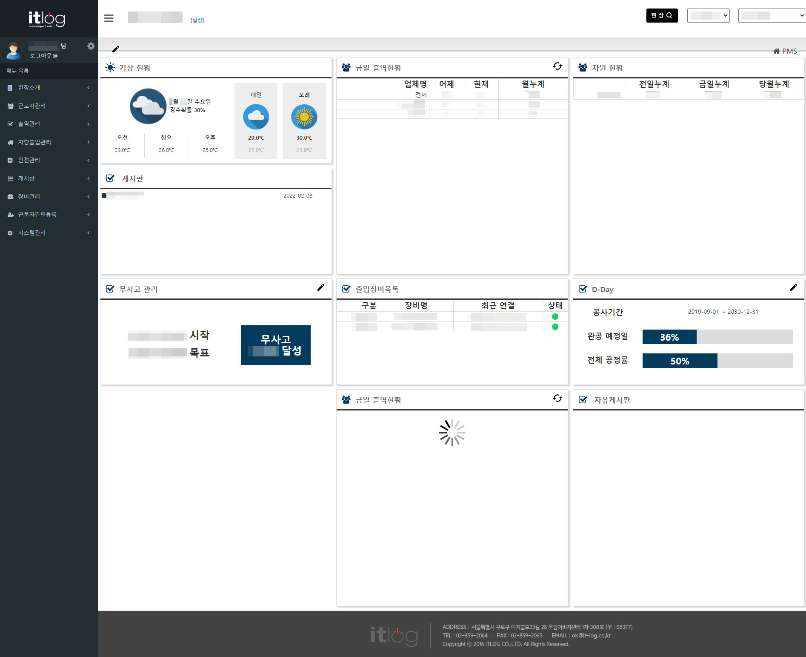
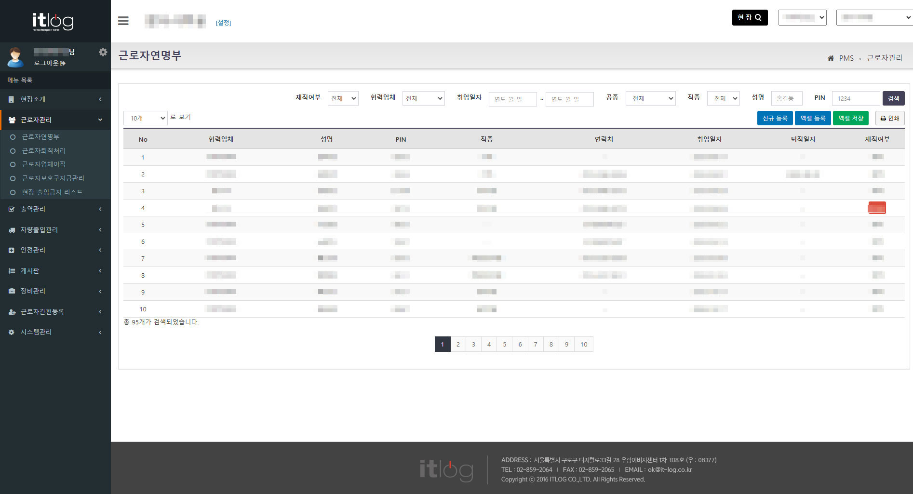

기존사이트
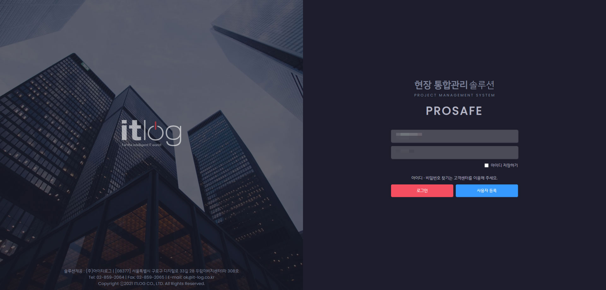
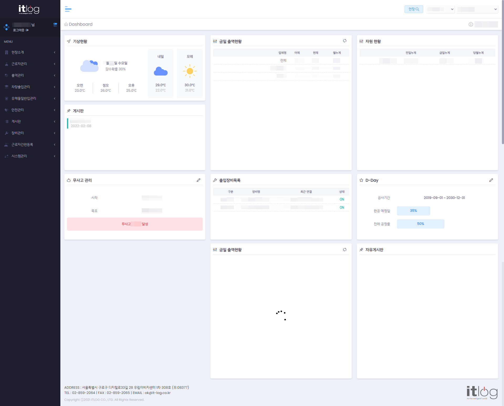
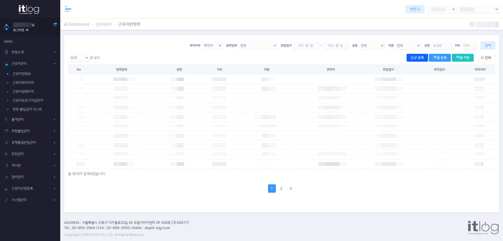
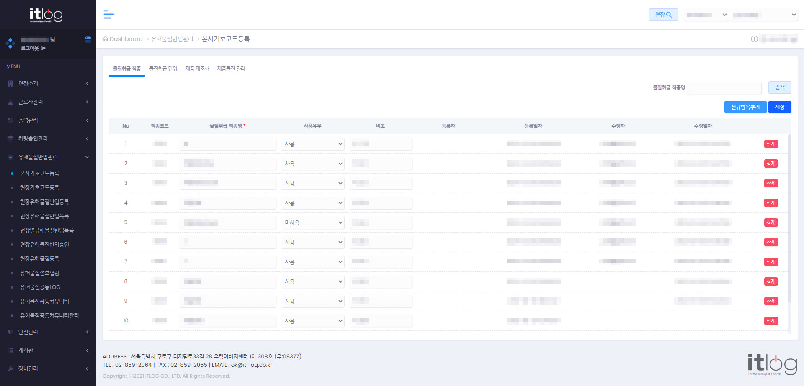
리뉴얼사이트
건설 현장 관리자들을 대상으로 현장근로자, 취급물질, 연간계획 등을 관리 할 수 있게 만들어진 관리자사이트 입니다.
구버전 PMS는 부트스트랩 기반의 사이트로 CSS 강제성이 높고, 몇 년간 다른 사람들의 손을 많이 타 CSS와 JS가 온 페이지에 흩어져있고 중복 된 복붙 코드가 많았습니다.
인라인 CSS코드를 외부 CSS파일로 정리, 모바일 코드 분리, 이미지를 사용한 버튼이나 배경 등을 코드로 변경, 동일한 레이아웃이나 디자인에 같은 클래스 적용, flex나 gird 적용 등 CSS코드 업그레이드가 주 된 업무였고, 인라인으로 사용 된 javascript도 셀렉터를 이용한 이벤트 발생, 중복 코드 정리 등을 진행하였습니다.
리펙토링 진행 중에도 PMS에 추가 되는 기능(페이지)도 함께 구현했습니다.
2021.09 ~ 2021.10
PMS 앱 디자인 리뉴얼 & 코드 리펙토링
개발인원 : 디자인&퍼블리싱1명
적용기술 : HTML5, CSS3, J-query, javascript
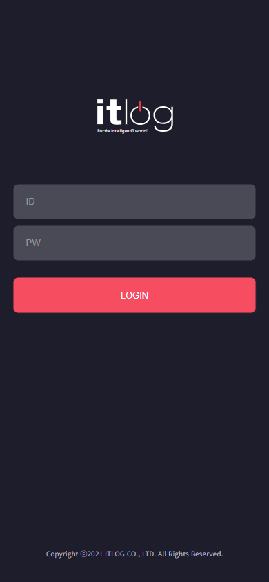
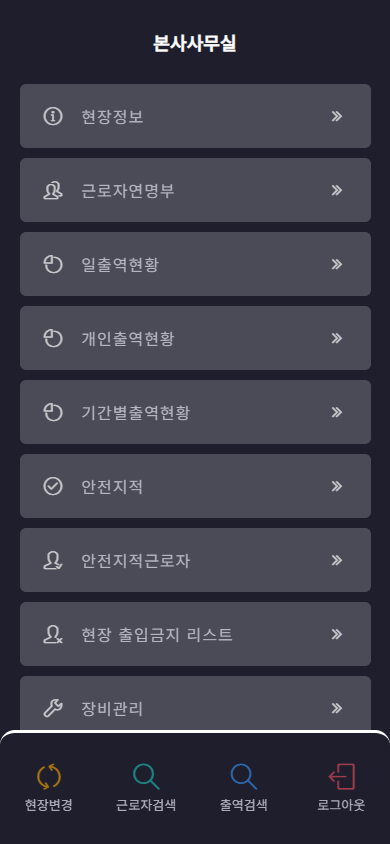
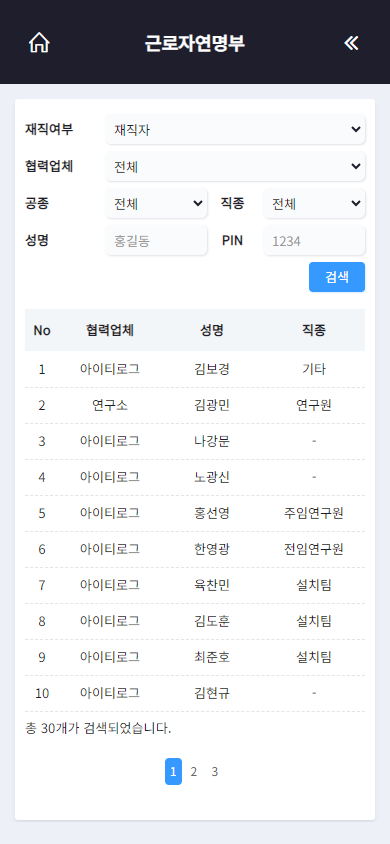
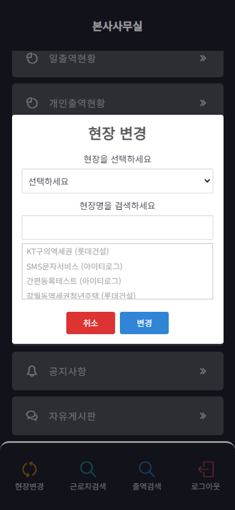
PMS 앱은 PC버전보다 내용이 간략하고 기본적인 레이아웃만 사용하고 있어 디자인 리뉴얼이 수월했습니다.
리뉴얼한 PMS 웹 사이트 디자인에 맞춰 전체 디자인과 퍼블리싱을 담당하였습니다.
2021.11 ~ 2021.12
P사 CCTV 웹사이트 디자인 리뉴얼 & 코드 리펙토링
개발인원 : 백엔드1명, 디자인&퍼블리싱1명
적용기술 : HTML5, CSS3, javascript
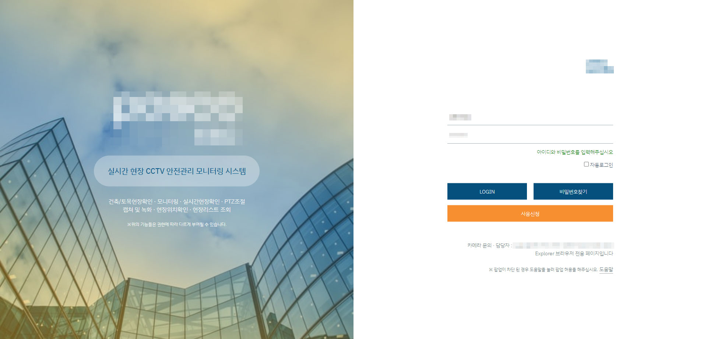
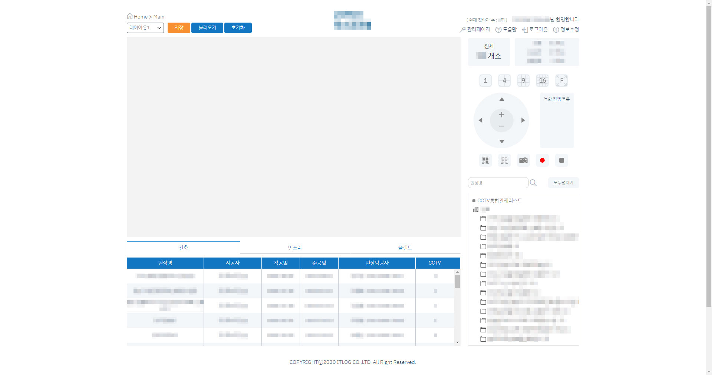
1차 디자인 리뉴얼 사이트
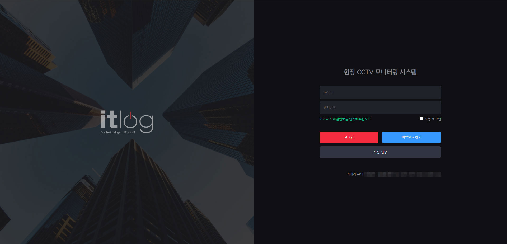
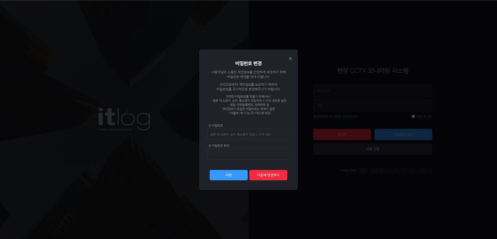
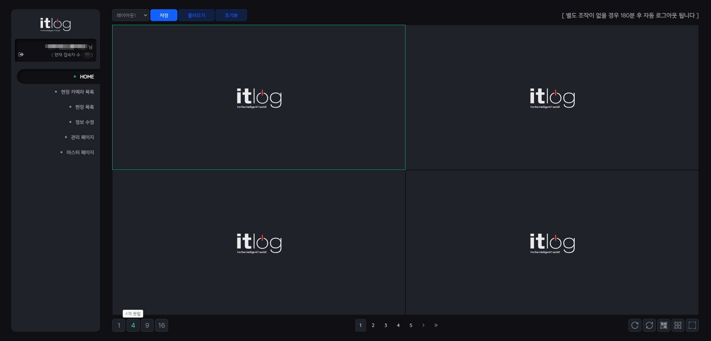
 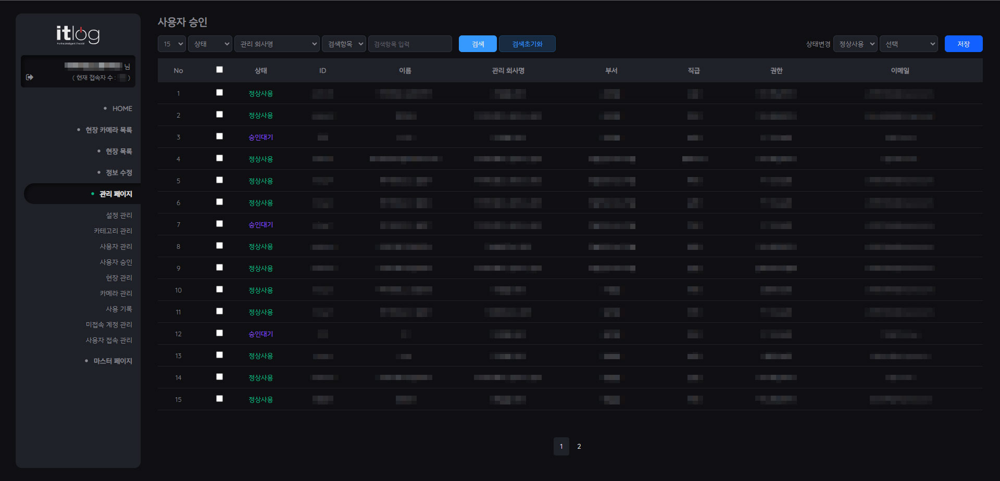
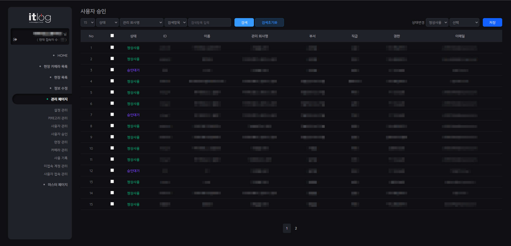
2차 프로젝트 리뉴얼 사이트
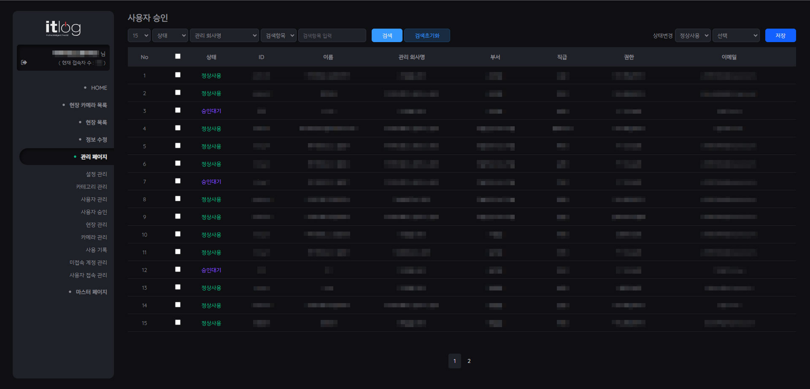
Explore에 최적화 된 초기 P사 CCTV 사이트는 소수 사용자들을 위해 작게 디자인 부분만 수정 하고, 모든 고객사가 사용할 수 있는 'Web CCTV Monitoring System' 사이트를 제작하였습니다.
전체 디자인 구성과